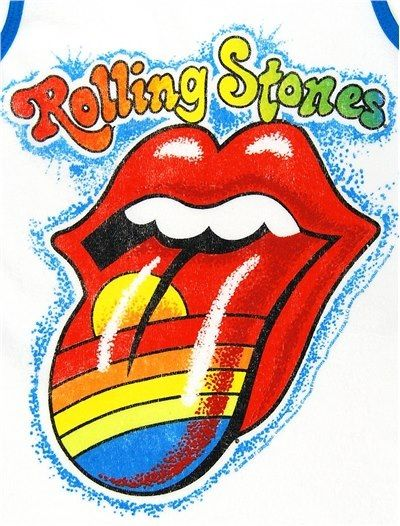

The Rolling Stones
The Rolling Stones are an English rock band formed in London in 1962. The first stable line-up consisted of bandleader Brian Jones (guitar, harmonica, keyboards), Mick Jagger (lead vocals, harmonica), Keith Richards (guitar, vocals), Bill Wyman (bass guitar), Charlie Watts (drums), and Ian Stewart (piano). Stewart was removed from the official line-up in 1963 but continued to work with the band as a contracted musician until his death in 1985. The band's primary songwriters, Jagger–Richards, assumed leadership after Andrew Loog Oldham became the group's manager. Jones left the band less than a month before his death in 1969, having already been replaced by Mick Taylor. Taylor left in 1974 and was replaced in 1975 by Ronnie Wood who has since remained. Since Wyman's departure in 1993, Darryl Jones has served as touring bassist. The Stones have not had an official keyboardist since 1963, but have employed several musicians in that role, including Jack Nitzsche (1965–1971), Nicky Hopkins (1967–1982), Billy Preston (1971–1981), Ian McLagan (1978–1981), and Chuck Leavell (1982–present).
The Rolling Stones were at the forefront of the British Invasion of bands that became popular in the United States in 1964 and were identified with the youthful and rebellious counterculture of the 1960s. Rooted in blues and early rock and roll, the band started out playing covers but found more success with their own material; songs such as "(I Can't Get No) Satisfaction" and "Paint It Black" became international hits, and Aftermath (1966) – their first entirely original album – has been considered the most important of the band's formative records.[1] After a short period of experimentation with psychedelic rock in the mid-1960s, the group returned to its "bluesy" roots with Beggars Banquet (1968), Let It Bleed (1969), Sticky Fingers (1971), and Exile on Main St. (1972). It was during this period they were first introduced on stage as "The Greatest Rock and Roll Band in the World".[2][3]
The band continued to release commercially successful albums through the 1970s and early 1980s, including Some Girls (1978) and Tattoo You (1981), the two best-sellers in their discography. During the 1980s, the band infighting curtailed their output and they only released two more underperforming albums and did not tour for the rest of the decade.
Their fortunes changed at the end of the decade, when they released Steel Wheels (1989), promoted by a large stadium and arena tour, the Steel Wheels/Urban Jungle Tour. Since the 1990s, new material has been less frequent. Despite this, the Rolling Stones continue to be a huge attraction on the live circuit. By 2007, the band had four of the top five highest-grossing concert tours of all time: Voodoo Lounge Tour (1994–1995), Bridges to Babylon Tour (1997–1998), Licks Tour (2002–2003) and A Bigger Bang (2005–2007).[4] Musicologist Robert Palmer attributes the endurance of the Rolling Stones to their being "rooted in traditional verities, in rhythm-and-blues and soul music", while "more ephemeral pop fashions have come and gone".[5]
The Rolling Stones were inducted into the Rock and Roll Hall of Fame in 1989 and the UK Music Hall of Fame in 2004.
Rolling Stone magazine ranked them fourth on the "100 Greatest Artists of All Time" list and their estimated record sales is 240 million. They have released 30 studio albums, 23 live albums and numerous compilations. Let It Bleed (1969) marked the first of five consecutive No. 1 studio and live albums in the UK. Sticky Fingers (1971) was the first of eight consecutive No. 1 studio albums in the US. In 2008, the band ranked 10th on the Billboard Hot 100 All-Time Top Artists chart. In 2012, the band celebrated its 50th anniversary. They still continue to release albums to brisk sales and critical acclaim; their most recent album Blue & Lonesome was released in December 2016 and reached No. 1 in the UK and No. 4 in the US and won a Grammy Award for Best Traditional Blues Album. The group also continues to sell out venues, with their recent No Filter Tour running for two years and concluding in August 2019.